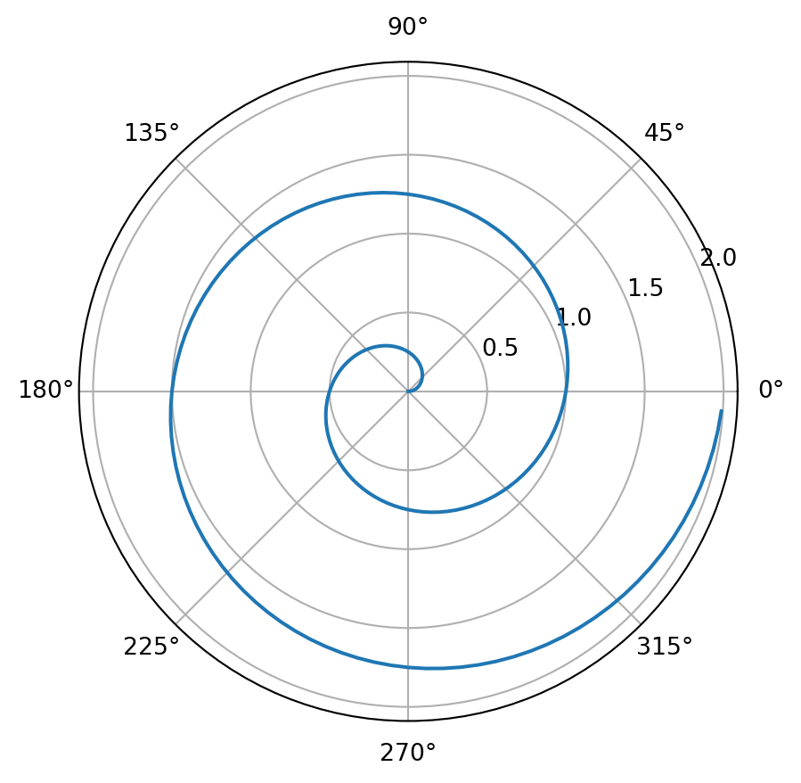

import numpy as np
import matplotlib.pyplot as pltr = np.arange(0, 2, 0.01)
theta = 2 * np.pi * r
fig, ax = plt.subplots(
subplot_kw = {'projection' : 'polar'}
)
ax.plot(theta, r)
ax.set_rticks([0.5, 1, 1.5, 2])
ax.grid(True)
plt.show()
pip install quarto-cliRequirement already satisfied: quarto-cli in /opt/anaconda3/lib/python3.11/site-packages (1.6.40)
Requirement already satisfied: jupyter in /opt/anaconda3/lib/python3.11/site-packages (from quarto-cli) (1.0.0)
Requirement already satisfied: nbclient in /opt/anaconda3/lib/python3.11/site-packages (from quarto-cli) (0.8.0)
Requirement already satisfied: wheel in /opt/anaconda3/lib/python3.11/site-packages (from quarto-cli) (0.41.2)
Requirement already satisfied: notebook in /opt/anaconda3/lib/python3.11/site-packages (from jupyter->quarto-cli) (7.2.2)
Requirement already satisfied: qtconsole in /opt/anaconda3/lib/python3.11/site-packages (from jupyter->quarto-cli) (5.6.0)
Requirement already satisfied: jupyter-console in /opt/anaconda3/lib/python3.11/site-packages (from jupyter->quarto-cli) (6.6.3)
Requirement already satisfied: nbconvert in /opt/anaconda3/lib/python3.11/site-packages (from jupyter->quarto-cli) (7.16.4)
Requirement already satisfied: ipykernel in /opt/anaconda3/lib/python3.11/site-packages (from jupyter->quarto-cli) (6.29.5)
Requirement already satisfied: ipywidgets in /opt/anaconda3/lib/python3.11/site-packages (from jupyter->quarto-cli) (7.8.1)
Requirement already satisfied: jupyter-client>=6.1.12 in /opt/anaconda3/lib/python3.11/site-packages (from nbclient->quarto-cli) (8.6.0)
Requirement already satisfied: jupyter-core!=5.0.*,>=4.12 in /opt/anaconda3/lib/python3.11/site-packages (from nbclient->quarto-cli) (5.7.2)
Requirement already satisfied: nbformat>=5.1 in /opt/anaconda3/lib/python3.11/site-packages (from nbclient->quarto-cli) (5.10.4)
Requirement already satisfied: traitlets>=5.4 in /opt/anaconda3/lib/python3.11/site-packages (from nbclient->quarto-cli) (5.14.3)
Requirement already satisfied: python-dateutil>=2.8.2 in /opt/anaconda3/lib/python3.11/site-packages (from jupyter-client>=6.1.12->nbclient->quarto-cli) (2.9.0.post0)
Requirement already satisfied: pyzmq>=23.0 in /opt/anaconda3/lib/python3.11/site-packages (from jupyter-client>=6.1.12->nbclient->quarto-cli) (26.2.0)
Requirement already satisfied: tornado>=6.2 in /opt/anaconda3/lib/python3.11/site-packages (from jupyter-client>=6.1.12->nbclient->quarto-cli) (6.4.2)
Requirement already satisfied: platformdirs>=2.5 in /opt/anaconda3/lib/python3.11/site-packages (from jupyter-core!=5.0.*,>=4.12->nbclient->quarto-cli) (3.10.0)
Requirement already satisfied: fastjsonschema>=2.15 in /opt/anaconda3/lib/python3.11/site-packages (from nbformat>=5.1->nbclient->quarto-cli) (2.20.0)
Requirement already satisfied: jsonschema>=2.6 in /opt/anaconda3/lib/python3.11/site-packages (from nbformat>=5.1->nbclient->quarto-cli) (4.23.0)
Requirement already satisfied: appnope in /opt/anaconda3/lib/python3.11/site-packages (from ipykernel->jupyter->quarto-cli) (0.1.2)
Requirement already satisfied: comm>=0.1.1 in /opt/anaconda3/lib/python3.11/site-packages (from ipykernel->jupyter->quarto-cli) (0.2.1)
Requirement already satisfied: debugpy>=1.6.5 in /opt/anaconda3/lib/python3.11/site-packages (from ipykernel->jupyter->quarto-cli) (1.8.11)
Requirement already satisfied: ipython>=7.23.1 in /opt/anaconda3/lib/python3.11/site-packages (from ipykernel->jupyter->quarto-cli) (8.30.0)
Requirement already satisfied: matplotlib-inline>=0.1 in /opt/anaconda3/lib/python3.11/site-packages (from ipykernel->jupyter->quarto-cli) (0.1.6)
Requirement already satisfied: nest-asyncio in /opt/anaconda3/lib/python3.11/site-packages (from ipykernel->jupyter->quarto-cli) (1.6.0)
Requirement already satisfied: packaging in /opt/anaconda3/lib/python3.11/site-packages (from ipykernel->jupyter->quarto-cli) (24.2)
Requirement already satisfied: psutil in /opt/anaconda3/lib/python3.11/site-packages (from ipykernel->jupyter->quarto-cli) (5.9.0)
Requirement already satisfied: ipython-genutils~=0.2.0 in /opt/anaconda3/lib/python3.11/site-packages (from ipywidgets->jupyter->quarto-cli) (0.2.0)
Requirement already satisfied: widgetsnbextension~=3.6.6 in /opt/anaconda3/lib/python3.11/site-packages (from ipywidgets->jupyter->quarto-cli) (3.6.6)
Requirement already satisfied: jupyterlab-widgets<3,>=1.0.0 in /opt/anaconda3/lib/python3.11/site-packages (from ipywidgets->jupyter->quarto-cli) (1.0.0)
Requirement already satisfied: prompt-toolkit>=3.0.30 in /opt/anaconda3/lib/python3.11/site-packages (from jupyter-console->jupyter->quarto-cli) (3.0.43)
Requirement already satisfied: pygments in /opt/anaconda3/lib/python3.11/site-packages (from jupyter-console->jupyter->quarto-cli) (2.15.1)
Requirement already satisfied: beautifulsoup4 in /opt/anaconda3/lib/python3.11/site-packages (from nbconvert->jupyter->quarto-cli) (4.12.3)
Requirement already satisfied: bleach!=5.0.0 in /opt/anaconda3/lib/python3.11/site-packages (from nbconvert->jupyter->quarto-cli) (6.2.0)
Requirement already satisfied: defusedxml in /opt/anaconda3/lib/python3.11/site-packages (from nbconvert->jupyter->quarto-cli) (0.7.1)
Requirement already satisfied: jinja2>=3.0 in /opt/anaconda3/lib/python3.11/site-packages (from nbconvert->jupyter->quarto-cli) (3.1.4)
Requirement already satisfied: jupyterlab-pygments in /opt/anaconda3/lib/python3.11/site-packages (from nbconvert->jupyter->quarto-cli) (0.1.2)
Requirement already satisfied: markupsafe>=2.0 in /opt/anaconda3/lib/python3.11/site-packages (from nbconvert->jupyter->quarto-cli) (2.1.3)
Requirement already satisfied: mistune<4,>=2.0.3 in /opt/anaconda3/lib/python3.11/site-packages (from nbconvert->jupyter->quarto-cli) (2.0.4)
Requirement already satisfied: pandocfilters>=1.4.1 in /opt/anaconda3/lib/python3.11/site-packages (from nbconvert->jupyter->quarto-cli) (1.5.0)
Requirement already satisfied: tinycss2 in /opt/anaconda3/lib/python3.11/site-packages (from nbconvert->jupyter->quarto-cli) (1.2.1)
Requirement already satisfied: jupyter-server<3,>=2.4.0 in /opt/anaconda3/lib/python3.11/site-packages (from notebook->jupyter->quarto-cli) (2.14.1)
Requirement already satisfied: jupyterlab-server<3,>=2.27.1 in /opt/anaconda3/lib/python3.11/site-packages (from notebook->jupyter->quarto-cli) (2.27.3)
Requirement already satisfied: jupyterlab<4.3,>=4.2.0 in /opt/anaconda3/lib/python3.11/site-packages (from notebook->jupyter->quarto-cli) (4.2.5)
Requirement already satisfied: notebook-shim<0.3,>=0.2 in /opt/anaconda3/lib/python3.11/site-packages (from notebook->jupyter->quarto-cli) (0.2.3)
Requirement already satisfied: qtpy>=2.4.0 in /opt/anaconda3/lib/python3.11/site-packages (from qtconsole->jupyter->quarto-cli) (2.4.1)
Requirement already satisfied: webencodings in /opt/anaconda3/lib/python3.11/site-packages (from bleach!=5.0.0->nbconvert->jupyter->quarto-cli) (0.5.1)
Requirement already satisfied: decorator in /opt/anaconda3/lib/python3.11/site-packages (from ipython>=7.23.1->ipykernel->jupyter->quarto-cli) (5.1.1)
Requirement already satisfied: jedi>=0.16 in /opt/anaconda3/lib/python3.11/site-packages (from ipython>=7.23.1->ipykernel->jupyter->quarto-cli) (0.19.2)
Requirement already satisfied: stack-data in /opt/anaconda3/lib/python3.11/site-packages (from ipython>=7.23.1->ipykernel->jupyter->quarto-cli) (0.2.0)
Requirement already satisfied: typing-extensions>=4.6 in /opt/anaconda3/lib/python3.11/site-packages (from ipython>=7.23.1->ipykernel->jupyter->quarto-cli) (4.12.2)
Requirement already satisfied: pexpect>4.3 in /opt/anaconda3/lib/python3.11/site-packages (from ipython>=7.23.1->ipykernel->jupyter->quarto-cli) (4.8.0)
Requirement already satisfied: attrs>=22.2.0 in /opt/anaconda3/lib/python3.11/site-packages (from jsonschema>=2.6->nbformat>=5.1->nbclient->quarto-cli) (24.3.0)
Requirement already satisfied: jsonschema-specifications>=2023.03.6 in /opt/anaconda3/lib/python3.11/site-packages (from jsonschema>=2.6->nbformat>=5.1->nbclient->quarto-cli) (2023.7.1)
Requirement already satisfied: referencing>=0.28.4 in /opt/anaconda3/lib/python3.11/site-packages (from jsonschema>=2.6->nbformat>=5.1->nbclient->quarto-cli) (0.30.2)
Requirement already satisfied: rpds-py>=0.7.1 in /opt/anaconda3/lib/python3.11/site-packages (from jsonschema>=2.6->nbformat>=5.1->nbclient->quarto-cli) (0.22.3)
Requirement already satisfied: anyio>=3.1.0 in /opt/anaconda3/lib/python3.11/site-packages (from jupyter-server<3,>=2.4.0->notebook->jupyter->quarto-cli) (4.6.2)
Requirement already satisfied: argon2-cffi>=21.1 in /opt/anaconda3/lib/python3.11/site-packages (from jupyter-server<3,>=2.4.0->notebook->jupyter->quarto-cli) (21.3.0)
Requirement already satisfied: jupyter-events>=0.9.0 in /opt/anaconda3/lib/python3.11/site-packages (from jupyter-server<3,>=2.4.0->notebook->jupyter->quarto-cli) (0.10.0)
Requirement already satisfied: jupyter-server-terminals>=0.4.4 in /opt/anaconda3/lib/python3.11/site-packages (from jupyter-server<3,>=2.4.0->notebook->jupyter->quarto-cli) (0.4.4)
Requirement already satisfied: overrides>=5.0 in /opt/anaconda3/lib/python3.11/site-packages (from jupyter-server<3,>=2.4.0->notebook->jupyter->quarto-cli) (7.4.0)
Requirement already satisfied: prometheus-client>=0.9 in /opt/anaconda3/lib/python3.11/site-packages (from jupyter-server<3,>=2.4.0->notebook->jupyter->quarto-cli) (0.21.0)
Requirement already satisfied: send2trash>=1.8.2 in /opt/anaconda3/lib/python3.11/site-packages (from jupyter-server<3,>=2.4.0->notebook->jupyter->quarto-cli) (1.8.2)
Requirement already satisfied: terminado>=0.8.3 in /opt/anaconda3/lib/python3.11/site-packages (from jupyter-server<3,>=2.4.0->notebook->jupyter->quarto-cli) (0.17.1)
Requirement already satisfied: websocket-client>=1.7 in /opt/anaconda3/lib/python3.11/site-packages (from jupyter-server<3,>=2.4.0->notebook->jupyter->quarto-cli) (1.8.0)
Requirement already satisfied: async-lru>=1.0.0 in /opt/anaconda3/lib/python3.11/site-packages (from jupyterlab<4.3,>=4.2.0->notebook->jupyter->quarto-cli) (2.0.4)
Requirement already satisfied: httpx>=0.25.0 in /opt/anaconda3/lib/python3.11/site-packages (from jupyterlab<4.3,>=4.2.0->notebook->jupyter->quarto-cli) (0.27.0)
Requirement already satisfied: jupyter-lsp>=2.0.0 in /opt/anaconda3/lib/python3.11/site-packages (from jupyterlab<4.3,>=4.2.0->notebook->jupyter->quarto-cli) (2.2.0)
Requirement already satisfied: setuptools>=40.1.0 in /opt/anaconda3/lib/python3.11/site-packages (from jupyterlab<4.3,>=4.2.0->notebook->jupyter->quarto-cli) (68.2.2)
Requirement already satisfied: babel>=2.10 in /opt/anaconda3/lib/python3.11/site-packages (from jupyterlab-server<3,>=2.27.1->notebook->jupyter->quarto-cli) (2.11.0)
Requirement already satisfied: json5>=0.9.0 in /opt/anaconda3/lib/python3.11/site-packages (from jupyterlab-server<3,>=2.27.1->notebook->jupyter->quarto-cli) (0.9.25)
Requirement already satisfied: requests>=2.31 in /opt/anaconda3/lib/python3.11/site-packages (from jupyterlab-server<3,>=2.27.1->notebook->jupyter->quarto-cli) (2.32.3)
Requirement already satisfied: wcwidth in /opt/anaconda3/lib/python3.11/site-packages (from prompt-toolkit>=3.0.30->jupyter-console->jupyter->quarto-cli) (0.2.5)
Requirement already satisfied: six>=1.5 in /opt/anaconda3/lib/python3.11/site-packages (from python-dateutil>=2.8.2->jupyter-client>=6.1.12->nbclient->quarto-cli) (1.16.0)
Requirement already satisfied: soupsieve>1.2 in /opt/anaconda3/lib/python3.11/site-packages (from beautifulsoup4->nbconvert->jupyter->quarto-cli) (2.5)
Requirement already satisfied: idna>=2.8 in /opt/anaconda3/lib/python3.11/site-packages (from anyio>=3.1.0->jupyter-server<3,>=2.4.0->notebook->jupyter->quarto-cli) (3.7)
Requirement already satisfied: sniffio>=1.1 in /opt/anaconda3/lib/python3.11/site-packages (from anyio>=3.1.0->jupyter-server<3,>=2.4.0->notebook->jupyter->quarto-cli) (1.3.0)
Requirement already satisfied: argon2-cffi-bindings in /opt/anaconda3/lib/python3.11/site-packages (from argon2-cffi>=21.1->jupyter-server<3,>=2.4.0->notebook->jupyter->quarto-cli) (21.2.0)
Requirement already satisfied: pytz>=2015.7 in /opt/anaconda3/lib/python3.11/site-packages (from babel>=2.10->jupyterlab-server<3,>=2.27.1->notebook->jupyter->quarto-cli) (2024.1)
Requirement already satisfied: certifi in /opt/anaconda3/lib/python3.11/site-packages (from httpx>=0.25.0->jupyterlab<4.3,>=4.2.0->notebook->jupyter->quarto-cli) (2025.1.31)
Requirement already satisfied: httpcore==1.* in /opt/anaconda3/lib/python3.11/site-packages (from httpx>=0.25.0->jupyterlab<4.3,>=4.2.0->notebook->jupyter->quarto-cli) (1.0.2)
Requirement already satisfied: h11<0.15,>=0.13 in /opt/anaconda3/lib/python3.11/site-packages (from httpcore==1.*->httpx>=0.25.0->jupyterlab<4.3,>=4.2.0->notebook->jupyter->quarto-cli) (0.14.0)
Requirement already satisfied: parso<0.9.0,>=0.8.4 in /opt/anaconda3/lib/python3.11/site-packages (from jedi>=0.16->ipython>=7.23.1->ipykernel->jupyter->quarto-cli) (0.8.4)
Requirement already satisfied: python-json-logger>=2.0.4 in /opt/anaconda3/lib/python3.11/site-packages (from jupyter-events>=0.9.0->jupyter-server<3,>=2.4.0->notebook->jupyter->quarto-cli) (3.2.1)
Requirement already satisfied: pyyaml>=5.3 in /opt/anaconda3/lib/python3.11/site-packages (from jupyter-events>=0.9.0->jupyter-server<3,>=2.4.0->notebook->jupyter->quarto-cli) (6.0.2)
Requirement already satisfied: rfc3339-validator in /opt/anaconda3/lib/python3.11/site-packages (from jupyter-events>=0.9.0->jupyter-server<3,>=2.4.0->notebook->jupyter->quarto-cli) (0.1.4)
Requirement already satisfied: rfc3986-validator>=0.1.1 in /opt/anaconda3/lib/python3.11/site-packages (from jupyter-events>=0.9.0->jupyter-server<3,>=2.4.0->notebook->jupyter->quarto-cli) (0.1.1)
Requirement already satisfied: ptyprocess>=0.5 in /opt/anaconda3/lib/python3.11/site-packages (from pexpect>4.3->ipython>=7.23.1->ipykernel->jupyter->quarto-cli) (0.7.0)
Requirement already satisfied: charset-normalizer<4,>=2 in /opt/anaconda3/lib/python3.11/site-packages (from requests>=2.31->jupyterlab-server<3,>=2.27.1->notebook->jupyter->quarto-cli) (3.3.2)
Requirement already satisfied: urllib3<3,>=1.21.1 in /opt/anaconda3/lib/python3.11/site-packages (from requests>=2.31->jupyterlab-server<3,>=2.27.1->notebook->jupyter->quarto-cli) (1.26.20)
Requirement already satisfied: executing in /opt/anaconda3/lib/python3.11/site-packages (from stack-data->ipython>=7.23.1->ipykernel->jupyter->quarto-cli) (0.8.3)
Requirement already satisfied: asttokens in /opt/anaconda3/lib/python3.11/site-packages (from stack-data->ipython>=7.23.1->ipykernel->jupyter->quarto-cli) (2.0.5)
Requirement already satisfied: pure-eval in /opt/anaconda3/lib/python3.11/site-packages (from stack-data->ipython>=7.23.1->ipykernel->jupyter->quarto-cli) (0.2.2)
Requirement already satisfied: fqdn in /opt/anaconda3/lib/python3.11/site-packages (from jsonschema[format-nongpl]>=4.18.0->jupyter-events>=0.9.0->jupyter-server<3,>=2.4.0->notebook->jupyter->quarto-cli) (1.5.1)
Requirement already satisfied: isoduration in /opt/anaconda3/lib/python3.11/site-packages (from jsonschema[format-nongpl]>=4.18.0->jupyter-events>=0.9.0->jupyter-server<3,>=2.4.0->notebook->jupyter->quarto-cli) (20.11.0)
Requirement already satisfied: jsonpointer>1.13 in /opt/anaconda3/lib/python3.11/site-packages (from jsonschema[format-nongpl]>=4.18.0->jupyter-events>=0.9.0->jupyter-server<3,>=2.4.0->notebook->jupyter->quarto-cli) (2.1)
Requirement already satisfied: uri-template in /opt/anaconda3/lib/python3.11/site-packages (from jsonschema[format-nongpl]>=4.18.0->jupyter-events>=0.9.0->jupyter-server<3,>=2.4.0->notebook->jupyter->quarto-cli) (1.3.0)
Requirement already satisfied: webcolors>=24.6.0 in /opt/anaconda3/lib/python3.11/site-packages (from jsonschema[format-nongpl]>=4.18.0->jupyter-events>=0.9.0->jupyter-server<3,>=2.4.0->notebook->jupyter->quarto-cli) (24.11.1)
Requirement already satisfied: cffi>=1.0.1 in /opt/anaconda3/lib/python3.11/site-packages (from argon2-cffi-bindings->argon2-cffi>=21.1->jupyter-server<3,>=2.4.0->notebook->jupyter->quarto-cli) (1.17.1)
Requirement already satisfied: pycparser in /opt/anaconda3/lib/python3.11/site-packages (from cffi>=1.0.1->argon2-cffi-bindings->argon2-cffi>=21.1->jupyter-server<3,>=2.4.0->notebook->jupyter->quarto-cli) (2.21)
Requirement already satisfied: arrow>=0.15.0 in /opt/anaconda3/lib/python3.11/site-packages (from isoduration->jsonschema[format-nongpl]>=4.18.0->jupyter-events>=0.9.0->jupyter-server<3,>=2.4.0->notebook->jupyter->quarto-cli) (1.3.0)
Note: you may need to restart the kernel to use updated packages.